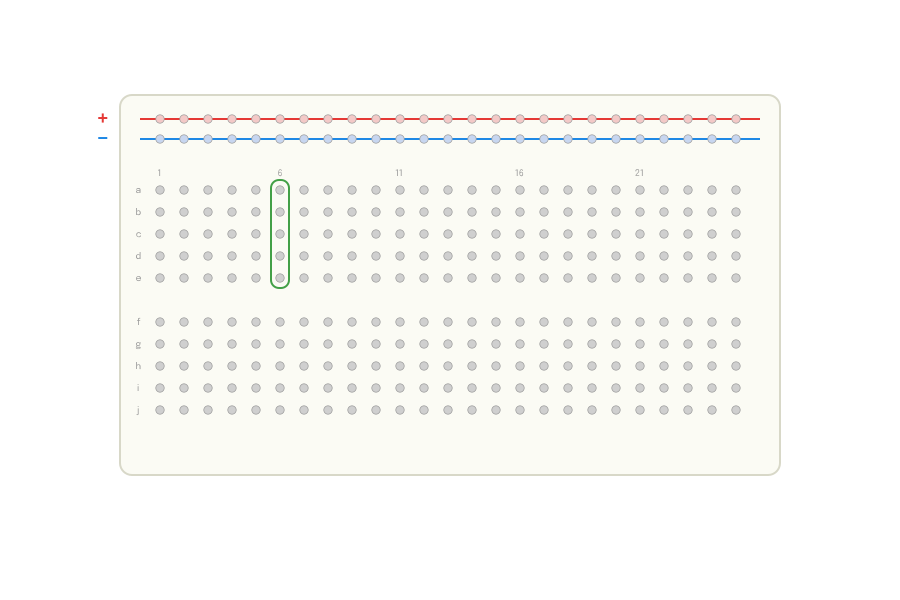
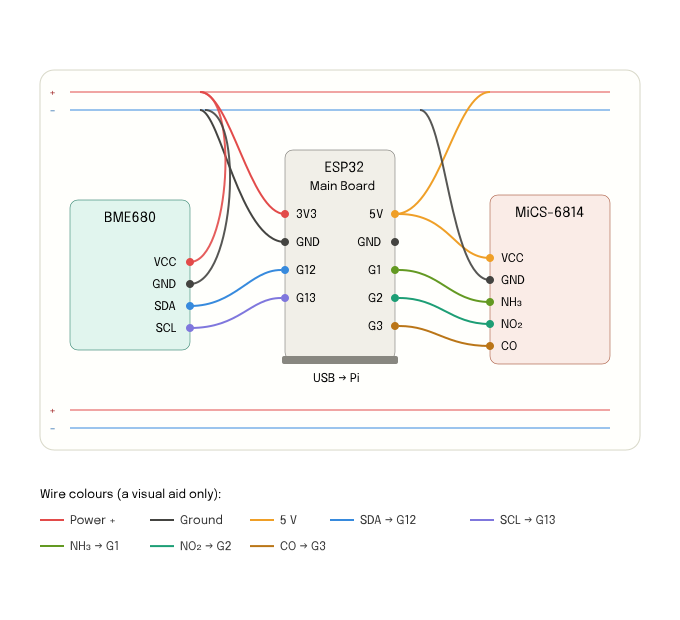

1.1 Why monitoring from below
This is a guide to building an air-quality sensor to monitor pollution levels. This guide has been written to create a community-owned network of sensors in Taranto, but it can be used by anyone who feels the need to use citizen-science methodologies to monitor their living space. It is especially aimed at people resisting in Sacrifice Zones of the world, as a tool to counter the information enclosure.
This guide walks you step by step through building the "Aria Bene Comune" air quality sensor. It is written for people starting from scratch: no experience with electronics or programming is needed. We will use simple materials, open code, and plain language, because the tool to know your own air should be within everyone's reach, not locked behind specialist skills. This is not the ultimate guide to an air quality sensor; discussions and changes are invited and supported. Let's experiment and learn together!
1.2 Your role in the network
By building and activating this sensor, you become one of the network's nodes. Every node has its own identifier (in the sketch, it is the sensor_id field, e.g. "S1"): this is what allows data from different community sensors to be distinguished.
The "Aria Bene Comune" is a community-owned platform, which will bring together data from all nodes into a single view.
The device measures the key indicators of the air we breathe:
- Particulate matter PM2.5 and PM10 — fine dust particles suspended in the air.
- Ammonia (NH₃), carbon monoxide (CO), and nitrogen dioxide (NO₂) — gases linked to traffic, combustion, and agricultural activity.
- Volatile organic compounds (VOC) — vapours from paints, solvents, and cleaning products; expressed as gas resistance in kΩ.
- Temperature, humidity, and atmospheric pressure — the basic environmental conditions.
Your sensor works perfectly on its own, but it is designed to contribute, together with many others, to a shared and continuously updated picture of the air we breathe.
2.1 What to buy


2.2 What a breadboard is
If you have never used a breadboard, this section is for you. We'll go slowly, because once you understand one simple idea, everything else becomes easy.
A breadboard is a plastic board full of small holes that lets you connect electronic parts together without soldering. You just push wires and pins into the holes. The clever part is that many of those holes are already connected to each other inside the board, by hidden metal strips. So when you put two wires into two holes that are internally joined, those two wires are electrically connected — as if you had twisted them together.

There are only two patterns to remember:
- The numbered columns (the main middle area): each column of 5 holes is joined together vertically. The top half (rows a–e) and the bottom half (rows f–j) are separate, divided by the channel in the middle. So holes a, b, c, d, e of column 6 are all the same electrical point; but the f–j holes of column 6 are a different point.
- The two long side rails (marked + and −): these run the whole length horizontally and are used to distribute power (+) and ground (−) to many parts at once. They're like two shared supply lines.
Two pins are connected only if they sit in holes that are internally joined. To connect two things, you either put them in the same column, or you run a jumper wire from one column to another. To NOT connect things, keep them in different columns.
2.3 Identifying your jumper wires
- Male–male (M–M): a metal pin on both ends. Used breadboard-to-breadboard, or breadboard to a pin header.
- Male–female (M–F): a pin on one end, a little socket on the other. Used to go from a breadboard hole to a board's pin, or directly between pins.
- Female–female (F–F): a socket on both ends. Used to connect two pins directly, no breadboard needed.
If you solder header pins onto your boards and use the breadboard, male–male wires connect breadboard columns to each other and to the rails. The wire colour means nothing electrically — it's only to help you keep track; by convention people use red for + and black for ground.
2.4 Recommended assembly order
Proceeding in small steps, checking after each one, makes it much easier to find any mistakes:
- With the ESP32 unplugged, wire the BME680 (3V3, GND, SDA→GPIO12, SCL→GPIO13).
- Wire the MiCS-6814 (5V, GND, and the three gas outputs to GPIO1, GPIO2, GPIO3).
- Re-check every wire against the wiring diagram in chapter 3 (section 3.2): in particular check the voltages (BME680 at 3.3 V, MiCS-6814 at 5 V) and that all GND grounds are common.
- Upload the sketch to the ESP32 and open the Serial Monitor at 115200 baud: check that "BME680 OK" appears and then the JSON lines. This confirms the sensors are wired correctly.
- Connect the ESP32 to the Raspberry Pi via USB, and connect the SDS011 too.
- Start the server on the Pi and open
/api/statusin the browser: if both boards show as connected, the electronic assembly is complete. - Only at this point, place everything in the enclosure (chapter 6).
It's best to do all these checks with the components still "out in the open", easy to reach. Once everything works, moving to the enclosure is much less stressful. If something doesn't work, chapter 5 (Troubleshooting) lists the most common causes.
3.1 Soldering header pins
- Get strips of "male header pins" (the cheap rows of pins you snap to length). Snap off a piece with the right number of pins for each board's hole row.
- Push the pins through the board's holes from the underside, so the long ends point down (those go into the breadboard) and the short ends sit on the component side.
- A trick to hold them straight: push the long ends into the breadboard first, then sit the board on top. The breadboard keeps the pins perfectly aligned while you solder.
- Heat each pin and its hole with the soldering iron for a second, then touch the solder so it flows around the joint, forming a small shiny cone. Repeat for every pin.
- Let it cool. Your board now has pins and behaves like a breadboard-friendly module.
A soldering iron reaches over 300 °C. Work on a heat-proof surface, in a ventilated space, never touch the metal tip, and unplug it when you're done. Safety glasses are a good idea. If you've never soldered, this is a great first project to do with a more experienced friend or at a makerspace.
3.2 Wiring the sensors to the ESP32
The quickest way to understand the connections is to look at them. The diagram below shows the ESP32 in the centre, the BME680 on the left, and the MiCS-6814 on the right, with each coloured wire going from the sensor pin to the correct ESP32 pin. At the bottom, the legend links each wire to the corresponding line of code.

Always power off the ESP32 (unplug the USB) while wiring. The BME680 runs at 3.3 V; the MiCS-6814 at 5 V. All grounds (GND) must share a common reference.
This assumes your ESP32 and both sensors now have header pins and are pushed into the breadboard, each straddling the central channel so their two pin rows land in separate columns. Place the ESP32 toward one end and the two sensors further along, leaving a few free columns between them. Then make the connections one wire at a time. After each wire, pause and check it against the diagram above.
- Set up the power rails. Run one male–male wire from the ESP32's 3V3 pin's column to the red (+) rail, and one from an ESP32 GND pin's column to the blue (−) rail. Now the whole length of those two rails carries 3.3 V and ground.
- Power the BME680. From the red (+) rail, run a wire to the column holding the BME680's VCC pin. From the blue (−) rail, run a wire to the BME680's GND column. (The BME680 runs at 3.3 V, which is what we put on the red rail.)
- BME680 data lines. Run a wire from the BME680's SDA column to the ESP32's GPIO12 column. Run another from the BME680's SCL column to the ESP32's GPIO13 column.
- Power the MiCS-6814. The MiCS-6814 needs 5 V, NOT 3.3 V. So do not use the red rail for it. Instead run a wire straight from the ESP32's 5V (VIN) column to the MiCS-6814's VCC column. For ground, you can use the blue (−) rail as normal (ground is shared by everything).
- MiCS-6814 gas outputs. Run three wires: NH₃ column → ESP32 GPIO1; NO₂ column → ESP32 GPIO2; CO column → ESP32 GPIO3.
- Final check. Count your wires against the diagram above. Confirm the BME680 is fed from 3.3 V, the MiCS-6814 from 5 V, and that every GND ends up on the blue rail (the common ground).
- Putting a wire one column off, so it lands on a neighbouring point — always count columns twice.
- Feeding the BME680 with 5 V instead of 3.3 V — double-check the power wire.
- Forgetting the common ground — every board's GND must reach the blue rail.
- Pushing a wire into the central channel — wires go into the lettered holes, not the gap.
3.3 Setting up the Arduino IDE
- Download and install the Arduino IDE from arduino.cc.
- In File → Preferences, add the ESP32 board package URL in the "Additional boards manager URLs" field.
- In Tools → Board → Boards Manager, search for "esp32" and install the package.
- Select Tools → Board → ESP32 Dev Module.
- From the Library Manager install: Adafruit BME680, Adafruit Unified Sensor, and ArduinoJson (by Benoit Blanchon).
3.4 The ESP32 sketch
Connect the ESP32 to your laptop with a USB-C cable. Then copy the code below and upload it to the ESP32 using the Arduino IDE.
#include <Wire.h>
#include <ArduinoJson.h>
#include <Adafruit_Sensor.h>
#include <Adafruit_BME680.h>
const char* SENSOR_ID = "S1";
const int PIN_NH3 = 1;
const int PIN_NO2 = 2;
const int PIN_CO = 3;
// Sampling: 5 close readings, one burst every 5 minutes
const int BURST_SAMPLES = 5; // readings per burst
const long SAMPLE_GAP_MS = 2000; // gap between readings (2 s)
const long CYCLE_PERIOD_MS = 300000; // interval between bursts (5 min)
Adafruit_BME680 bme;
bool bmeFound = false;
void setup() {
Serial.begin(115200);
delay(1000);
Wire.begin(12, 13);
if (bme.begin(0x76, &Wire)) {
bme.setTemperatureOversampling(BME680_OS_8X);
bme.setHumidityOversampling(BME680_OS_2X);
bme.setPressureOversampling(BME680_OS_4X);
bme.setIIRFilterSize(BME680_FILTER_SIZE_3);
bme.setGasHeater(320, 150);
bmeFound = true;
Serial.println("BME680 OK.");
} else {
Serial.println("BME680 not found - sending gas sensors only.");
}
Serial.println("Waiting 30s for MICS-6814 heaters...");
delay(30000);
Serial.println("Starting.");
}
void loop() {
double nh3Sum=0, no2Sum=0, coSum=0;
double tSum=0, hSum=0, pSum=0, gSum=0;
int gasCount=0, bmeCount=0;
for (int i = 0; i < BURST_SAMPLES; i++) {
nh3Sum += (analogRead(PIN_NH3) / 4095.0) * 100.0;
no2Sum += (analogRead(PIN_NO2) / 4095.0) * 100.0;
coSum += (analogRead(PIN_CO) / 4095.0) * 100.0;
gasCount++;
if (bmeFound && bme.performReading()) {
tSum += bme.temperature;
hSum += bme.humidity;
pSum += bme.pressure / 100.0;
gSum += bme.gas_resistance / 1000.0;
bmeCount++;
}
if (i < BURST_SAMPLES - 1) delay(SAMPLE_GAP_MS);
}
StaticJsonDocument<300> doc;
doc["sensor_id"] = SENSOR_ID;
doc["samples"] = gasCount;
doc["nh3"] = nh3Sum / gasCount;
doc["no2"] = no2Sum / gasCount;
doc["co"] = coSum / gasCount;
if (bmeCount > 0) {
doc["temperature"] = tSum / bmeCount;
doc["humidity"] = hSum / bmeCount;
doc["pressure"] = pSum / bmeCount;
doc["gas_kohm"] = gSum / bmeCount;
}
String payload;
serializeJson(doc, payload);
Serial.println(payload);
long burstElapsed = (long)(BURST_SAMPLES - 1) * SAMPLE_GAP_MS;
long wait = CYCLE_PERIOD_MS - burstElapsed;
if (wait < 0) wait = 0;
delay(wait);
}Code notes
- Built-in warm-up: the
delay(30000)in setup waits 30 seconds to stabilise the MiCS-6814 heaters. - Burst of 5 readings: averaging multiple readings reduces the noise typical of gas sensors, giving a more stable value.
- One transmission every 5 minutes: the
samplesfield in the JSON indicates how many readings make up the average (normally 5). - Gas values:
nh3,no2, andcoare the ADC reading as a percentage (0–100), not yet real concentrations. - Robustness: if the BME680 is not found, the sketch continues sending gas data only.
After uploading the sketch, open the Serial Monitor at 115200 baud: you will see startup messages, then one line every 5 minutes such as{"sensor_id":"S1","samples":5,"nh3":21.3,...}
For initial testing, temporarily lower CYCLE_PERIOD_MS to 15000 (15 s).
4.1 USB connections
On the Raspberry Pi there is no breadboard wiring: two devices are connected via USB.
- The SDS011 sensor, via its USB adapter, usually appears as
/dev/ttyUSB0. - The ESP32, connected via USB cable, usually appears as
/dev/ttyACM0.
If the names do not match, run in the Terminal:
ls /dev/ttyUSB* /dev/ttyACM*and update the SDS011_PORT and ESP_PORT variables at the top of the program.
4.2 Installing the software
Install Raspberry Pi OS on the microSD with Raspberry Pi Imager, then open a Terminal and run:
sudo apt update && sudo apt upgrade -y
sudo apt install -y python3-pip
pip3 install flask flask-cors pyserialCopy the server file to the Pi and, if present, the dist/ folder with the React dashboard. Then add your user to the serial port group:
sudo usermod -a -G dialout $USER
sudo reboot4.3 How the Pi program works
| Program component | What it does |
|---|---|
| SDS011 reader | Reads packets from the particulate sensor and extracts PM2.5 and PM10. |
| ESP32 reader | Reads JSON lines from the ESP32 and extracts gas and environmental data. |
| Merge loop | Every 30 seconds merges the latest readings into a single "snapshot". |
| Hourly average | Accumulates snapshots for the current hour and, at the turn of each hour, calculates and archives the average. |
| Saving | Writes data to CSV files and history to history.json and hourly.json. |
| Simulation | If a board is missing, generates realistic data in its place. |
| Web server (Flask) | Publishes the API endpoints and serves the dashboard on port 5050. |
Available endpoints
| Address | What it returns |
|---|---|
| /api/live | The latest merged snapshot of all values. |
| /api/history | The history of the last 24 hours. |
| /api/hourly | The hourly averages (the data displayed by the platform). |
| /api/status | Connection status of both boards. |
| /api/pm | The last 50 particulate readings. |
| /api/mean | The last 50 ESP32 readings, averaged by sensor. |
| /data (POST) | Allows an ESP32 to send data via Wi-Fi instead of USB. |
From sample to hourly average
- The ESP32 takes 5 close readings and sends their average: one value every 5 minutes (about 12 values per hour).
- The Raspberry Pi receives these values and, together with the particulate from the SDS011, accumulates them for the current hour.
- At the turn of each new hour, the server calculates the average of all values collected in the just-completed hour and archives it in
hourly.json. - The hourly average is the data exposed at
/api/hourly— what the community platform shows to citizens.
Starting the server
cd ~/aria-bene-comune # the folder where you put the file
python3 server.py # use the actual name of your fileFind the Pi's IP address with:
hostname -IFrom any device on the same network, open a browser at http://IP-ADDRESS:5050 to see the dashboard.
5.1 First boot and testing
- Connect the SDS011 and the ESP32 to the Pi's USB ports.
- For the first tests, power the Raspberry Pi from mains power: it is more stable while you verify everything works.
- Power on the Raspberry Pi and wait for the system to boot.
- Start the server as shown in chapter 4.
- Leave everything running for 10–15 minutes: this is the warm-up time for the gas sensors.
- Open the dashboard in a browser and check that values change over time.
- Open
/api/statusto verify that both boards show as connected (true).
If /api/status shows a board as false but you still see values, those values are simulated. Check the USB connections and port names.
5.2 Warm-up
The ESP32 sketch already waits 30 seconds on startup for the MiCS-6814 heaters. For truly reliable readings, however, it is best to leave the device powered on in clean air for at least 10–15 minutes before recording serious data.
5.3 Basic calibration
- PM2.5 and PM10: the SDS011 already outputs µg/m³, so it is essentially ready to use.
- Gases (NH₃, CO, NO₂): in the sketch these values are the ADC reading as a percentage (0–100), not real concentrations. Note the values in clean air as a "baseline". Converting them to actual concentrations requires applying the MiCS-6814 manufacturer's curves.
- VOC (
gas_kohm): this is a resistance in kΩ. In clean air the value is higher; it drops in the presence of vapours. Rather than the absolute number, what matters is how it varies relative to the baseline.
A hobbyist sensor indicates trends (whether air quality is improving or worsening) rather than laboratory-precision measurements. For home and educational use it is perfectly suitable.
5.4 Troubleshooting
| Problem | Possible cause | What to do |
|---|---|---|
| "unavailable" on startup | Wrong USB port | Check port names with ls /dev/ttyUSB* /dev/ttyACM* and update the variables |
| Permission denied on serial | User not in the dialout group | Run usermod -a -G dialout and reboot |
| Data always identical | Sensors not warmed up or simulation active | Wait 10–15 min; check /api/status |
| Dashboard does not open | Wrong IP or closed port | Verify IP with hostname -I; use port :5050 |
| ESP32 not recognised | Missing USB driver | Install CP210x/CH340 drivers on your system |
| JSON not read | Different baud rate or format | Make sure the sketch uses 115200 and the correct field names |
One of the core ideas behind "Aria Bene Comune" is that the sensor is truly accessible to everyone: open source and built with salvaged materials. There is no need for a bought or 3D-printed enclosure. Any waterproof container you already have at home will do: a biscuit tin, a food storage container, a plastic toolbox.
The enclosure must protect the electronics from rain while also allowing air to flow freely to the sensors.
6.1 What you need for the enclosure
- A waterproof container with a lid.
- A tool for making holes: a bradawl, a drill, or a nail and hammer.
- Strong adhesive tape or a hot glue gun to fix and seal.
- Electrical insulating tape (useful if the box is metal).
- Optional: fine mesh (fly screen) to cover the air holes.
- Optional: cable ties to secure the box.
6.2 Air holes
- Make a cluster of holes near the sensors (SDS011 and BME680).
- Put holes on the sides or bottom, never facing upward: they would collect rain.
- A few holes a few millimetres wide are enough: many small holes are better than one large opening.
- Cover the holes with fine mesh to keep out insects and dirt.
The SDS011 sensor has its own air intake with a small fan. Position the box so that intake is as close as possible to a cluster of holes, and that neither mesh nor cables obstruct it.
6.3 The cable hole and drip loop
- Make a single hole for the cables, as small as possible, on a side that faces downward.
- Seal around it with hot glue or tape, leaving the cable free to move slightly.
- Create an inverted-U loop in the cable just outside the hole (a loop pointing downward): rain drips off before reaching the hole. This technique is called a drip loop.
6.4 Power: solar panel and power bank
The solar panel charges the power bank, and the power bank powers the Raspberry Pi. The battery acts as a "reservoir": it accumulates energy when there is sun and continues to power the system when there is none.
It must support "passthrough charging": the ability to charge from the panel while simultaneously powering the Pi. Many cheap power banks shut off when being charged — these will not work.
6.5 Arranging components inside the box
- If the box is metal, line the inside with insulating tape: metal conducts electricity and accidental contact can cause a short circuit.
- Place the Raspberry Pi and power bank in the most sheltered spot, away from the air holes.
- Position the sensors (SDS011 and BME680) close to the air holes, without touching the walls.
- Rest the electronics on a small support (a bottle cap, foam) to keep them off the bottom.
- Put a silica gel sachet in the box to absorb excess moisture.
6.6 Outdoor installation
- Place the sensor in a well-ventilated spot, away from direct heat sources or smoke.
- The typical height for comparable measurements is about 1.5–3 metres above ground.
- Avoid corners with no air circulation: air must be able to circulate around the box.
- Secure the box firmly (cable ties to a railing) so the wind cannot move it.
- Orient the solar panel facing south, tilted so it does not retain water.
Happy building!
You've reached the end. When your sensor is switched on, you've added a voice to a shared, living picture of the air. Build it, improve it, and pass the guide on.